← Terug naar de JM-Rec-pagina · English version
JM-Rec — stap voor stap
Een rondleiding door JM-Rec aan de hand van echte schermafbeeldingen. De cijfers tussen haakjes verwijzen naar de bijhorende afbeelding; de volgorde is de volgorde die u in de app ook doorloopt.
1. Welkom
(01) Het opstartscherm
JM-Rec onthoudt het laatst gebruikte orgel. Begint u een nieuwe sessie, dan vraagt het eerst of u met dat orgel verder wilt of een nieuw orgel wilt opzetten.
- Doorgaan met dit orgel — opent het hoofdscherm meteen in de staat waarin u het laatst sloot: dezelfde opslagmap, dezelfde registers, dezelfde voortgang.
- Nieuw orgel instellen — start de wizard van tien stappen die hieronder volgt.

2. De wizard — tien stappen
Via tien korte stappen zet u de hele structuur klaar: waar de opnamen heen gaan, welke orgelbouwer en kerk het betreft, hoe de klavieren en registers eruitzien en hoe JM-Rec de audio moet opnemen. Elke stap is terug te zetten met de knop Vorige linksonder.
(02) Stap 1 — Opslaglocatie
De map waarin alle opnamen worden bewaard. Kies een map op een schijf met voldoende ruimte — een gemiddelde set is al snel enkele gigabytes groot. In diezelfde map komt automatisch per orgel een submap met de mapcode uit stap 5, zodat u meerdere orgels naast elkaar kunt opnemen zonder dat ze door elkaar lopen.
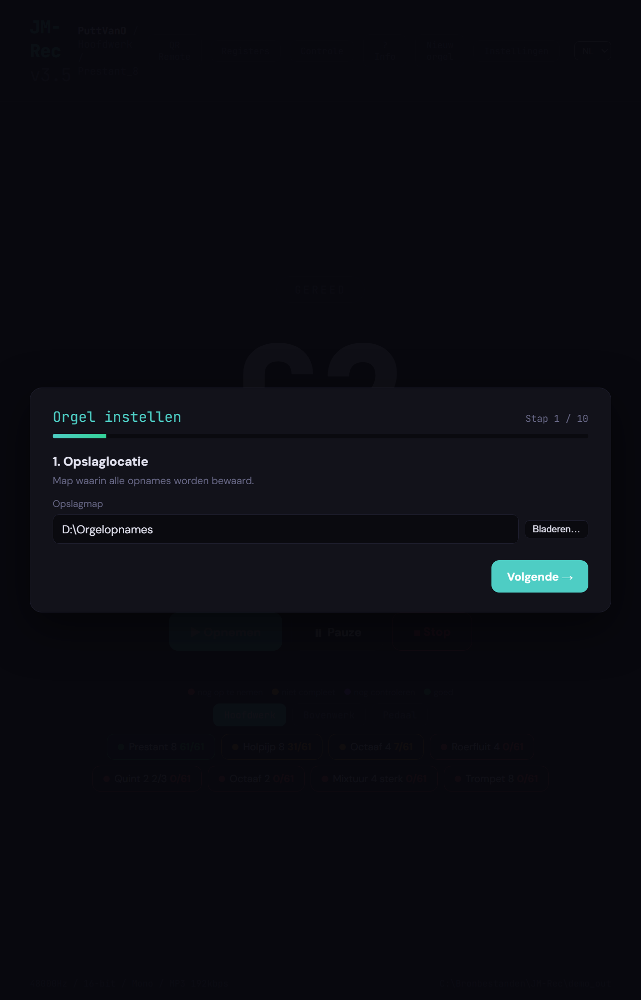
(03) Stap 2 — Microfoon(s)
De opnamebron waarmee JM-Rec de pijpen vastlegt. Twee keuzes:
- Microfoon(s) — neem rechtstreeks op via een of meer microfoons. Bij meerdere microfoons krijgt elke microfoon een eigen positienaam; die wordt een submap onder elk register (bijvoorbeeld
front,rear,surround), zodat u later per positie een eigen mix kunt maken in JM-Orgue. - Wat je hoort (loopback) — neem op wat Windows afspeelt. Handig voor een virtueel orgel of om een bestaande audiostream vast te leggen.
Heeft u een microfoonmatrix (bijvoorbeeld Intel® Smart Sound Technology) die meerdere microfoons als één apparaat aanbiedt, vink dan het vakje aan en geef de positienaam op.
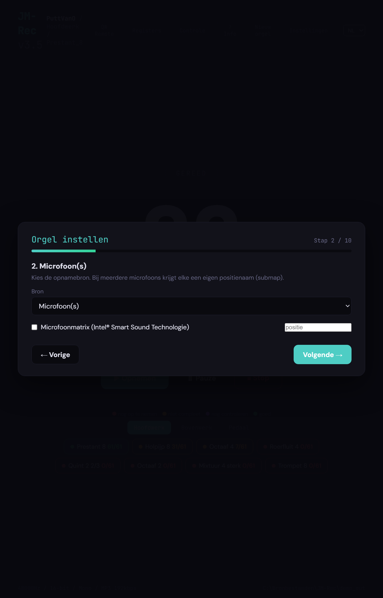
(04) Stap 3 — Plaatsnaam
De plaats waar het orgel staat (bijvoorbeeld Putten). Samen met de orgelbouwer uit stap 5 vormt dit automatisch de mapcode (vier letters plaats + vier letters bouwer) waaronder het orgel op schijf komt te staan. Onder het invoerveld ziet u direct hoe de mapcode wordt opgebouwd.
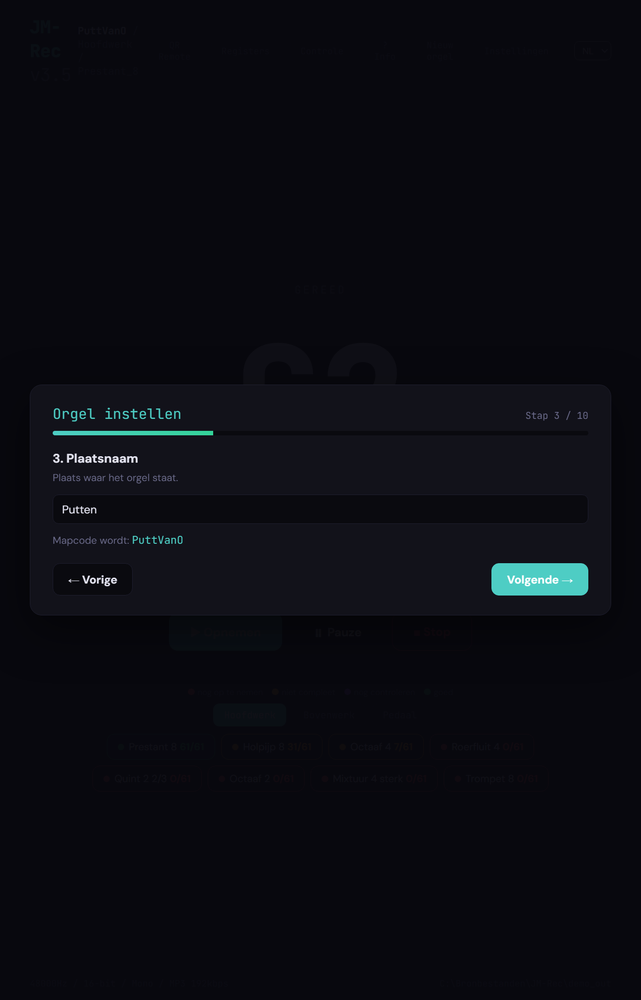
(05) Stap 4 — Kerknaam
De naam van het gebouw (Oude Kerk, Grote Kerk, …). Deze wordt als info-tekst in de opnamen vastgelegd en verschijnt in JM-Orgue op de kaart van het orgel.
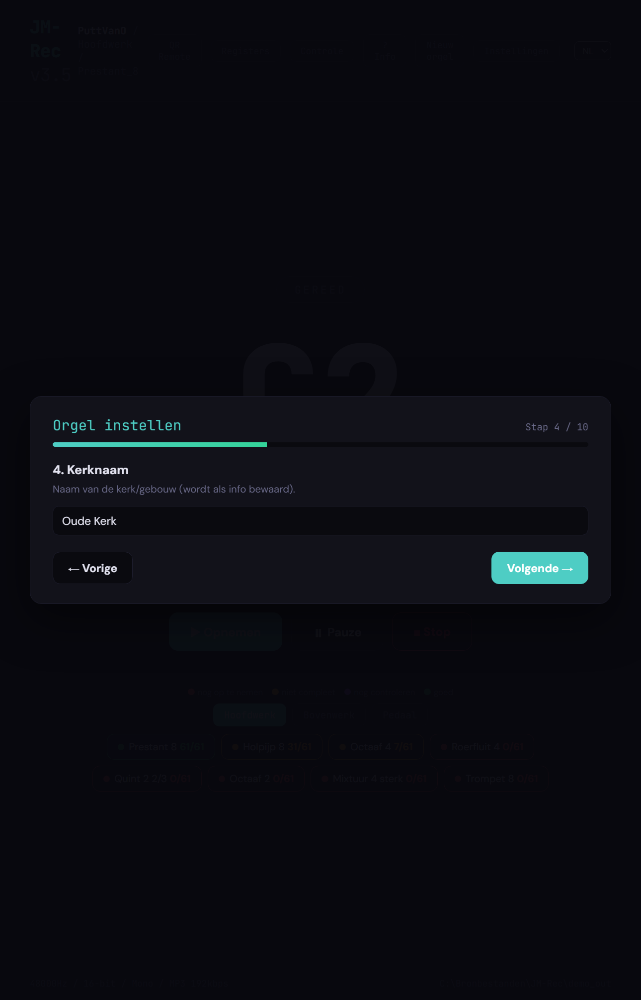
(06) Stap 5 — Orgelbouwer
De naam van de orgelbouwer (bijvoorbeeld Van Vulpen, Flentrop, Reil, Van Oeckelen). JM-Rec bewaart dit later als meta-informatie bij de opnamen, zodat u in JM-Orgue direct ziet welk orgel u speelt.
Onder het invoerveld staat de voorgestelde mapnaam (vier letters plaats + vier letters bouwer, bijvoorbeeld PuttVanO). Dat is de submap waarin de opnamen van dit orgel terechtkomen. U mag die vrij aanpassen voordat u verdergaat; na stap 10 ligt de map vast.
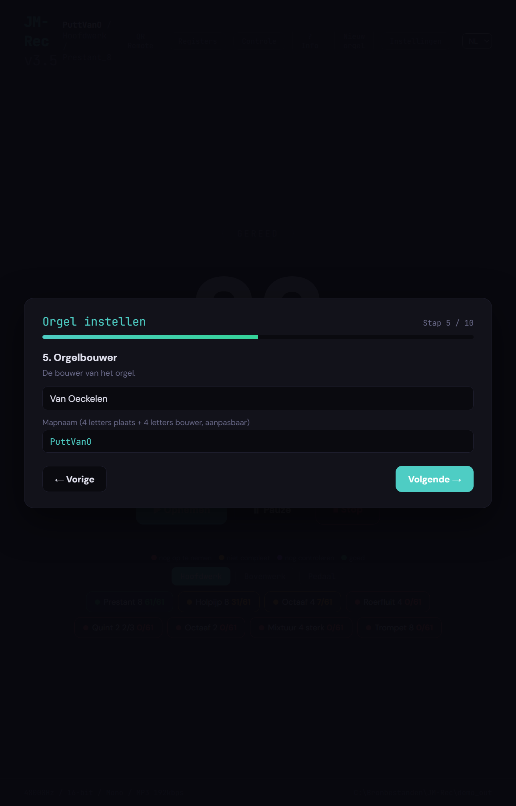
(07) Stap 6 — Klavieren en pedaal
Het aantal manualen (klavieren) van het orgel — standaard twee — en of er een pedaal aanwezig is. Op basis van deze twee waarden maakt JM-Rec in de volgende stappen de juiste rijen aan voor namen, tremulant/zwelkast en registers. Vergeet u een klavier, dan kunt u met Vorige altijd terug.
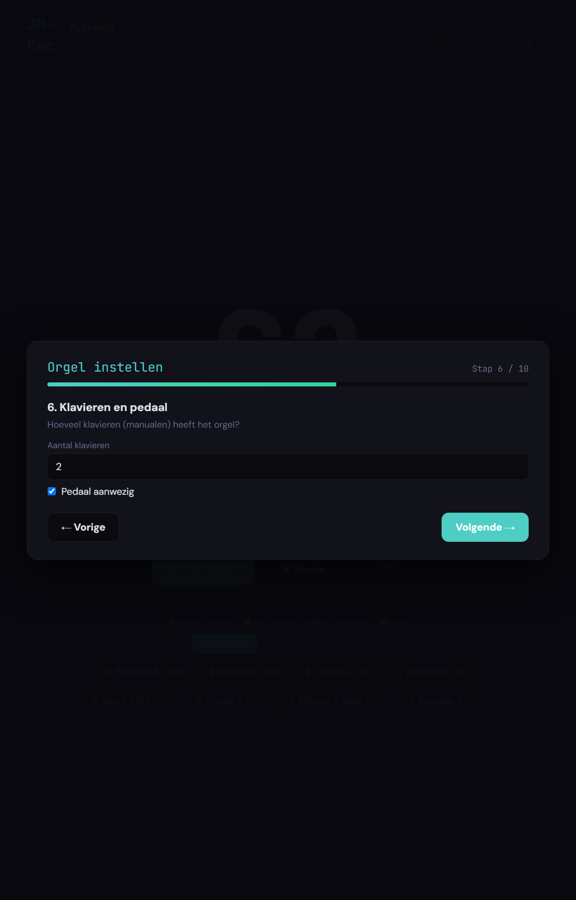
(08) Stap 7 — Naam per klavier
Geef elk klavier een naam — de gebruikelijke keuzes zoals Hoofdwerk, Bovenwerk, Zwelwerk, Borstwerk of Rugwerk worden al voorgesteld. Deze namen worden overal gebruikt: in de mapstructuur op schijf, in het hoofdscherm en in JM-Orgue. Het pedaal krijgt automatisch de naam Pedaal en hoeft u hier niet in te vullen.
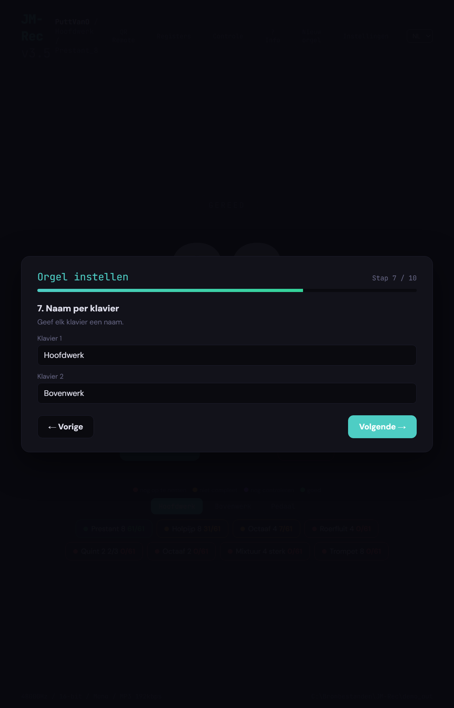
(09) Stap 8 — Tremulant en zwelkast
Twee verwante vragen in één stap:
- Tremulant — staat er een tremulant op het hele orgel, op een enkel klavier, of niet? Bij Heel het orgel wordt elk register tweemaal opgenomen (normaal én met achtervoegsel
_trem). Bij Per klavier vinkt u aan welke klavieren een tremulant hebben; alleen die registers worden dubbel opgenomen. - Zwelkast — vink per klavier aan welk klavier in een zwelkast staat (een zwelwerk). JM-Rec markeert die registers in JM-Orgue zodat ze op de juiste manier door de zwelpedalen worden aangestuurd.
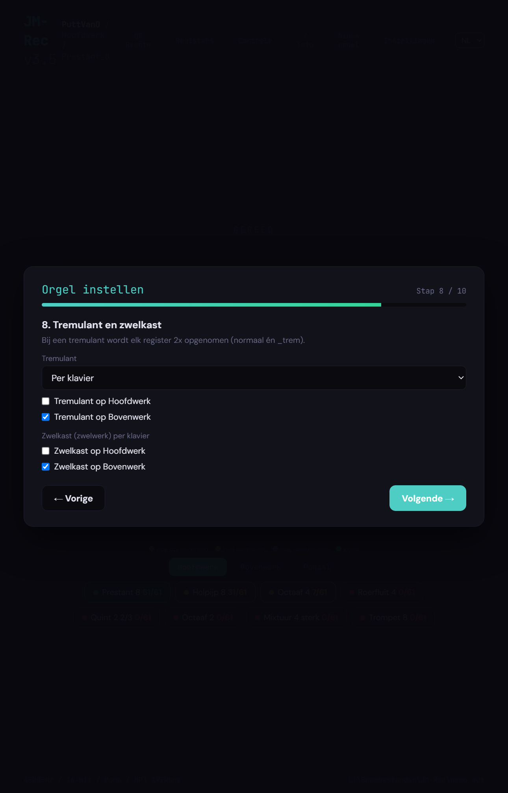
(10) Stap 9 — Registers per klavier
De kern van het instellen. Per klavier geeft u op welke registers er zijn, de voetmaat (8′, 4′, 2′, een gemengd “4 st”…), en van welke MIDI-noot tot welke MIDI-noot de registratie klinkt. Houd daarbij C-groot = MIDI 36 aan als geheugensteun. De meeste klavieren tellen 56 toetsen en lopen dan van 36 tot 91; het pedaal begint óók op 36 en loopt bijvoorbeeld bij 30 toetsen tot 65. Een halfregister (bijvoorbeeld Trompet 8 B/D) loopt doorgaans tot de splitstoets of start juist daar — markeer het met het vinkje Bas/disc en stel de splitstoets verderop in stap 10 in.
Met + Register onder elk klavier voegt u een extra register toe; met het rode kruisje aan de rechterkant verwijdert u een regel.
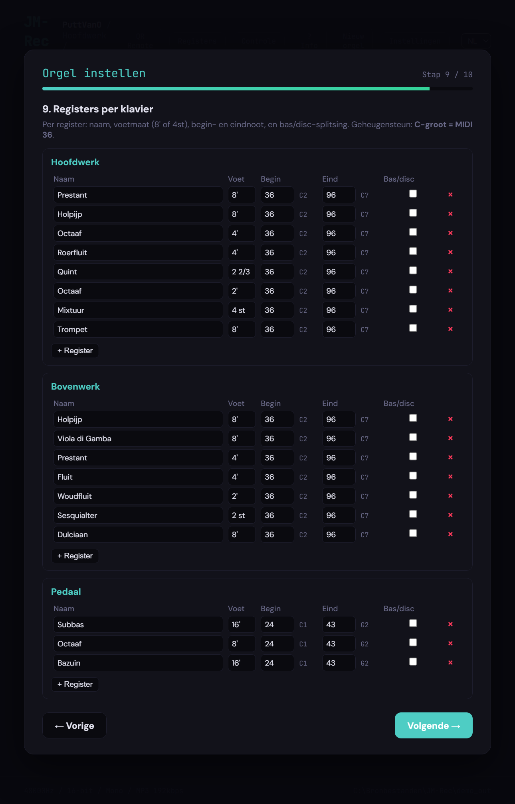
(11) Stap 10 — Opname-instellingen en koppels
In de laatste stap kiest u hoe JM-Rec opneemt en voegt u eventuele koppels toe. Rechtsonder staat Opslaan & starten; daarna is de wizard klaar en opent het hoofdscherm.
Audio-instellingen
JM-Rec komt uit de wizard met deze standaardwaarden:
- Samplerate 48 000 Hz — de hogere waarde die Windows en de meeste USB-interfaces zelf ook als standaard gebruiken; vermijdt onnodige resampling. 44 100 Hz is prima als uw opnameketen daarop staat; 96 000 Hz heeft voor pijporgelsamples zelden meerwaarde en verdubbelt het bestandsformaat.
- 16-bit — voor pijporgelopnames in een redelijk stille ruimte ruim voldoende dynamisch bereik. Kies 24-bit alleen als u aan de bronkant zacht moet opnemen (ver van de pijpen, veel ruis-reserve nodig) — de bestanden worden anderhalf keer zo groot.
- Mono — een pijp is per definitie één geluidsbron, en in JM-Orgue krijgt elke pijp pas plaats in de ruimte via het sample-set-ontwerp. Opnemen in mono halveert het schijfgebruik en voorkomt faseproblemen tussen linker- en rechterkanaal. Werkt u met meerdere microfoons (zie stap 2), dan maakt JM-Rec per positie een eigen monobestand — en dat is wat samplers als JM-Orgue daarna als stereo-/surround-mix combineren. Kies Stereo alleen bij een echte stereomicrofoon op één positie waar u die stereo-informatie op elke pijp wilt bewaren.
- MP3 (192 kbps) — een gemiddeld tweeklaviersorgel kan al snel enkele duizenden samples opleveren; MP3 houdt dat beheersbaar (ongeveer een tiende van WAV) zonder dat u het hoort op een orgelpijp. Wilt u verliesvrij werken — bijvoorbeeld om later nog loops of edits over te doen — kies dan FLAC (ongeveer de helft van WAV, bit-identiek) of WAV (ongecomprimeerd, nodig voor sommige externe editors). Zet Formaat op WAV of FLAC en de MP3-bitrate verdwijnt; de rest van de workflow verandert niet.
Tip: wilt u later toch naar WAV? Dan kunt u via ffmpeg in één commando een hele map omzetten (zie de README).
Workflow
- Aftellen en Opnameduur (sec) — standaard 5 en 5; voldoende voor een rustige toon met natuurlijke uitklank.
- Splitstoets bas/disc (MIDI) — standaard 60 (C4). Dit is de grens die JM-Rec gebruikt voor registers waarin u in stap 9 Bas/disc hebt aangevinkt.
- Opnamemodus — Vaste duur gebruikt gewoon de opgegeven seconden. Intelligent (assisterend) luistert mee en stopt zodra er genoeg stabiele, loopbare toon is; u krijgt dan op het scherm een duidelijk sein om los te laten. Alleen beschikbaar met een microfooningang.
Koppels
Onderin kiest u links en rechts twee klavieren en klikt u op + Koppel om een koppel toe te voegen (bijvoorbeeld Bovenwerk → Hoofdwerk of Hoofdwerk → Pedaal). De koppels worden in JM-Orgue als knoppen zichtbaar; voor de opname zelf verandert er niets — JM-Rec neemt alleen de pijpen op, nooit de koppeling.
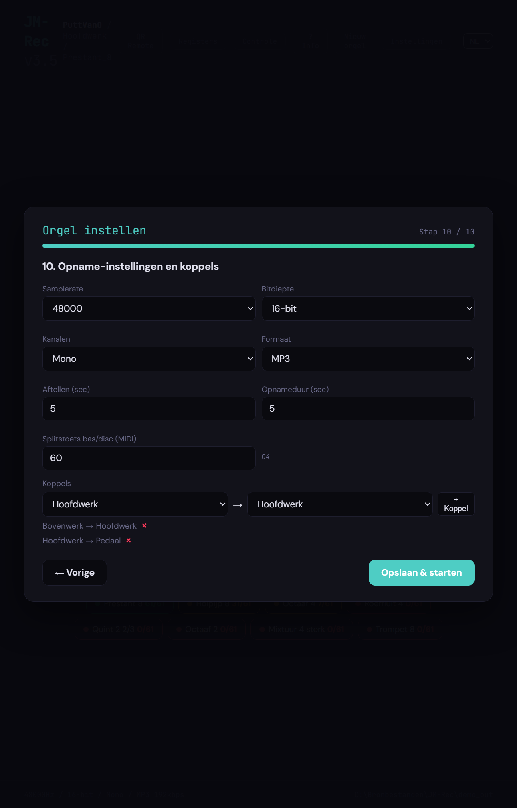
3. Opnemen
(12) Het hoofdscherm
Na de wizard belandt u op het hoofdscherm. Groot in beeld staat de noot die aan de beurt is (C2), met daaronder de bestandsnaam waaronder de opname wordt bewaard (036-c.mp3). De drie knoppen eronder zijn:
- Opnemen — start de opname en loopt bij een “slimme” opstelling automatisch naar de volgende noot.
- Pauze — onderbreekt tussen twee noten; handig als er een storing voorbijkomt.
- Stop — sluit de huidige opname en keert terug naar “Gereed”.
Onderaan ziet u per klavier (Hoofdwerk, Bovenwerk, Pedaal) alle registers met hun voortgang. De kleurenlegenda — nog op te nemen (rood), niet compleet (geel), nog te controleren (paars), goed (groen) — vertelt in één oogopslag waar u staat.
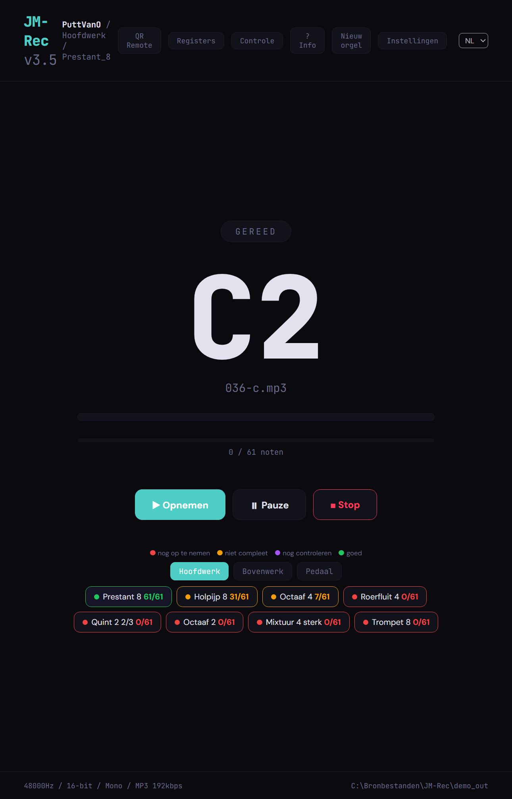
(13) Register compleet
Zodra de laatste pijp van een register binnen is, verschijnt een dialoog. U kunt kiezen:
- Nu controleren — opent het controlescherm meteen voor dit register.
- Goedgekeurd — markeert het register als klaar en gaat door naar het volgende.
- Later — houdt het register op “nog te controleren”, zodat u er later nog eens naar luistert.
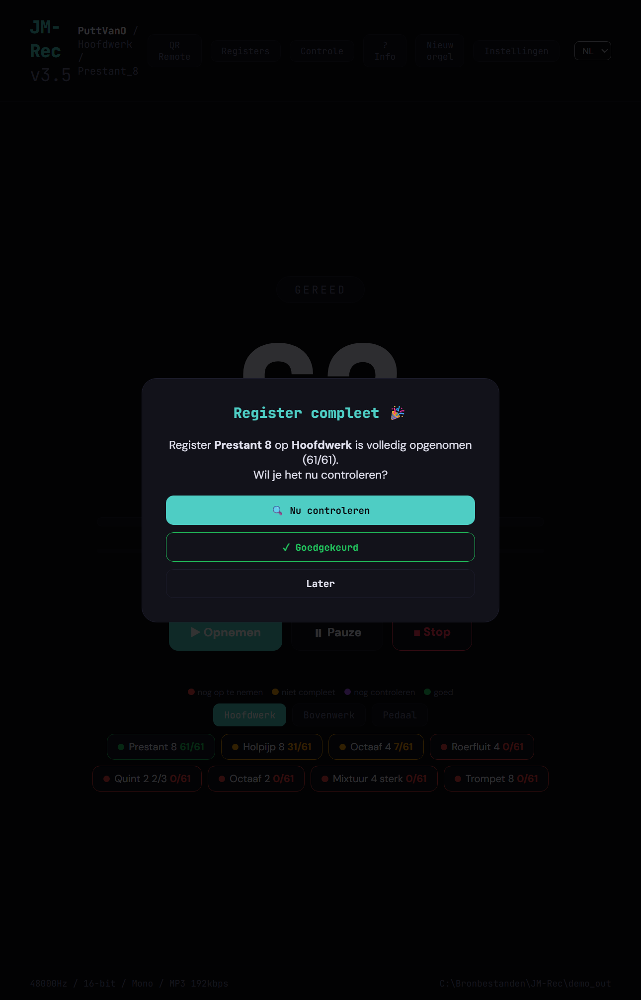
4. Controleren
(14) Controlescherm
Via de knop Controle bovenin, of via de dialoog uit stap 13, komt u in het controlescherm. JM-Rec laat per toon zien of de opname geldig is: stilte vooraan, oversturing (clipping), een te korte uitklank — alles wordt met kleur en symbool aangegeven. Opnieuw opnemen kan direct vanuit deze lijst.

(15) Loop-detectie
Een pijporgel klinkt lang; voor samplers wordt een “loop” gezet, zodat de toon kan blijven klinken zonder dat de opname onbegrensd lang hoeft te zijn. JM-Rec stelt voor elke toon een of meer loop-punten voor, laat ze zien in de golfvorm en speelt ze op proef af. Een klik bevestigt het voorstel of kiest een andere positie.
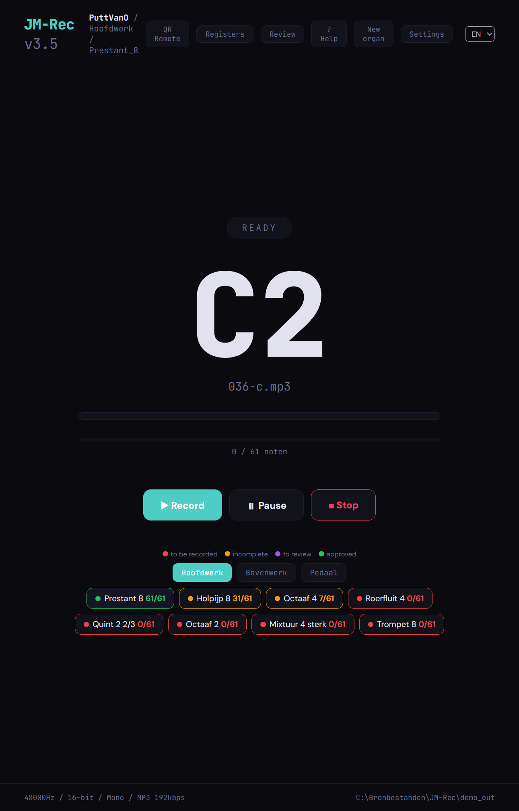
5. Afstandsbediening
(16) QR Remote
Via de knop QR Remote toont JM-Rec een QR-code met het netwerkadres (bijvoorbeeld http://192.168.1.10:5570). Scant u die met uw telefoon of tablet, dan opent de afstandsbediening in de browser. U bedient Opnemen, Pauze en Stop en ziet de huidige noot vanaf de orgelbank — zonder apps te installeren.
Geen wifi? Zet de Mobiele hotspot van Windows aan (knop Open hotspot-instellingen onderin), verbind uw telefoon met dat netwerk en kies hier het hotspot-netwerk uit het pulldown-menu.
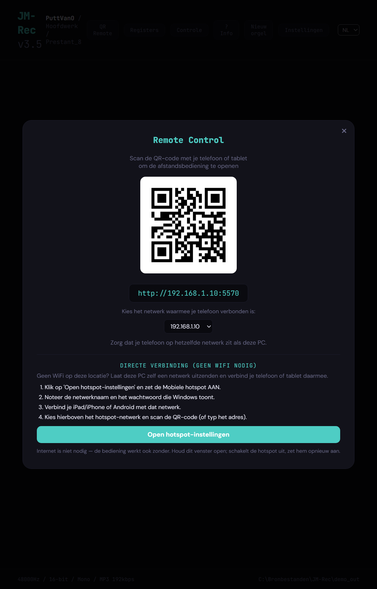
6. Resultaat in JM-Orgue
De opnamen openen
Zodra de opnamen af zijn, start u JM-Orgue en opent u in de bibliotheek de knop Open organ…. Wijst u de opslagmap aan die u in stap 1 koos, dan verschijnt het orgel in de bibliotheek met alle klavieren, registers en koppels die u in de wizard hebt opgegeven. Van daar af is het spelen zoals bij elke andere sampleset.